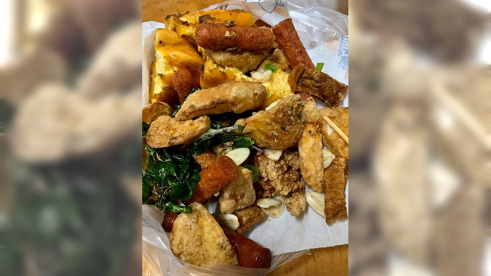

鹹鹹香香的鹽酥雞，是許多民眾的宵夜首選！高雄一名網友就分享，前幾天因為想吃又怕胖，到鹽酥雞攤點了30元的炸物解饞，
結果他拿到後發現袋子裡多了好幾樣不是他點的食物，才發現竟是老闆「撒密斯」！由於「這已經不是第一次了」，也讓他決定上網抱怨：「我會胖一定都是老闆跟老老闆的錯！」
「高雄的鹽酥雞每次都吃不完！」從原PO曝光的照片可見，滿滿一包鹹酥雞裡有銀絲卷、炸地瓜、小熱狗和黑輪，上面還有些許九層塔和蒜片點綴。原PO透露，這麼一大包竟然只要30元，
因為「圖中我只買了小熱狗、黑輪，其他都是老闆送的！」
他表示，每次去買鹽酥雞，老闆和老老闆總是親切的跟客人聊天，並在過程中「邊聊邊送邊丟」，最後拿到都變成超大一包。但因他擔心吃多會變胖，又不想浪費食物和老闆的好意，
最後只能通通吃完，「這已經不是第一次了，我決定要抱怨一下！我會胖一定都是老闆跟老老闆的錯。」
文章在「爆怨公社」曝光後，網友也羨慕直說「老闆人怎麼那麼好」、「小熱狗和黑輪才應該是送的吧」、「老闆好佛」、「想知道在高雄哪裡」、「跪求店址」，
原PO則回應，這間店生意已經夠好了，擔心再曝光以後就吃不到了，「所以別私我在哪」。另外也有人說，「麻煩請把這種害人發褔的老闆老闆趕出高雄，
板橋才是他的好去處，我在板橋會用我的愛心感化他！！就讓我一個人入地獄吧。」
